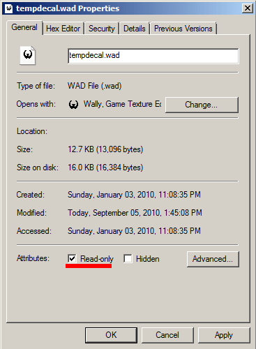

Tutorial 3: Spray with Hltagconverter With Transparency
Now with HLtagconverter you CAN just import a transparent PNG image you want and it will do all the resizing for you, and changing the transparent to the proper blue threshold, however this tutorial is aimed at getting a better result by doing the resizing and enhancements in your image editor.
We start off with an image loaded up. Since this is a difficult background to remove, we will be using the pen tool to crop this image out.
1) Using your pen tool, make a complete path around the image. When done, go to the Paths tab and select the work path. Press the dotted line button to load path as selection.

2) With the path now a selection, go to the layers tab and press the button to add a layer vector mask
3) The image is now masked off. Next create 2 layers below, one filled with black and one white. These layers are to check if any background was left in the mask. Toggle their visibility to check against both black and white backgrounds. With the layer mask selected in the layers menu, make any changes to the layer mask with the brush tool (Brush with black hides and brush with white shows).
4) We will now prepare the canvas for cropping & resizing, but before we do that we need to get an idea on what aspect would fit our image the best. Ive put together a small list of common spraylogo sizes including the larger sizes avalible from the Chart (reverse the ratios for a different orientation).
96X96 = 1:1
96X112 = 7:6
64X144 = 4:9
Choose one and put the ratio into your rectangular marquee by setting "Style" to "fixed ratio". The arrow buttons inbetween swaps the ratio. Move your selection around your object and keep it close. If it is not to your satisfaction, go with a different ratio/refer to the size chart. Im aiming for a 4:9 ratio. Once you are satisfied, press crop.
5) Im going with 4:9 ratio so i will resize 144 height (make sure constrain proportions is checked). With it set to 144X64 This is under 12288 so its valid. Resize the image using Bicubic sharper. Check the canvas size to ensure proper pixel sizing and crop if needed
6) Delete the black and white layers and create a new layer in its place filled with pure RGB green. Select the image layer and do any enhancements you like. Im using unsharp mask. You can also throw in some adjustment layers such as vibrance or whatnot if needed.
7) Select the layer mask by clicking it in your layers menu. You should see a box around the thumbnail like so when its selected.
8) With the mask selected, go to Image>Adjustments>Threshold. We are using threshold because GoldSrc images use only 1 colour for transparency. This makes the mask into a hard edge with no semi-transparent areas. Adjust the threshold slider to your liking. This has the added effect of removing any nasty white fringes left behind especially if you used magic wand.
9) When finished, flatten the image and save it to any lossless image format. I am going to save it as a 24bit TGA.
10) Open HLtagconverter and open your image.
11) Click the Transparency bar and click anywhere in the green. The green will turn blue and now you can click "apply changes".
12) Save the tag with the option "Export to WAD file"
13) Save the image as a WAD file to your desired game directory

14)Right click to properties for your "tempdecal.wad" file and check "Read only". This makes sure the decal is not overwritten when making changes in your multiplayer menu.

The spray in game.